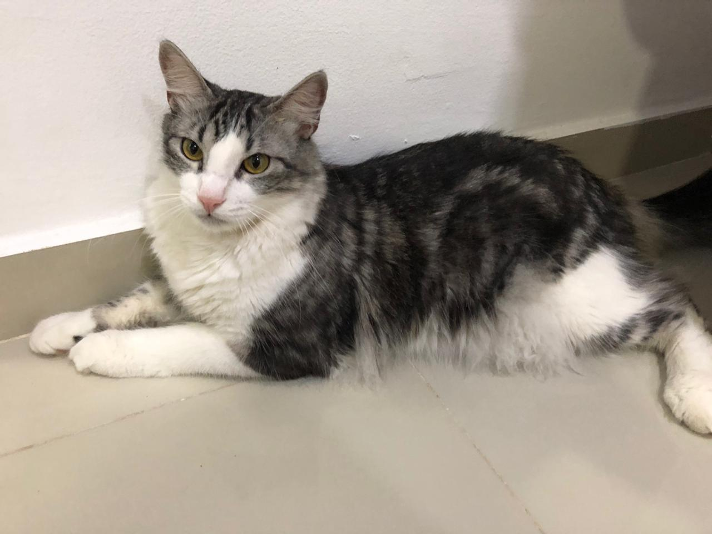
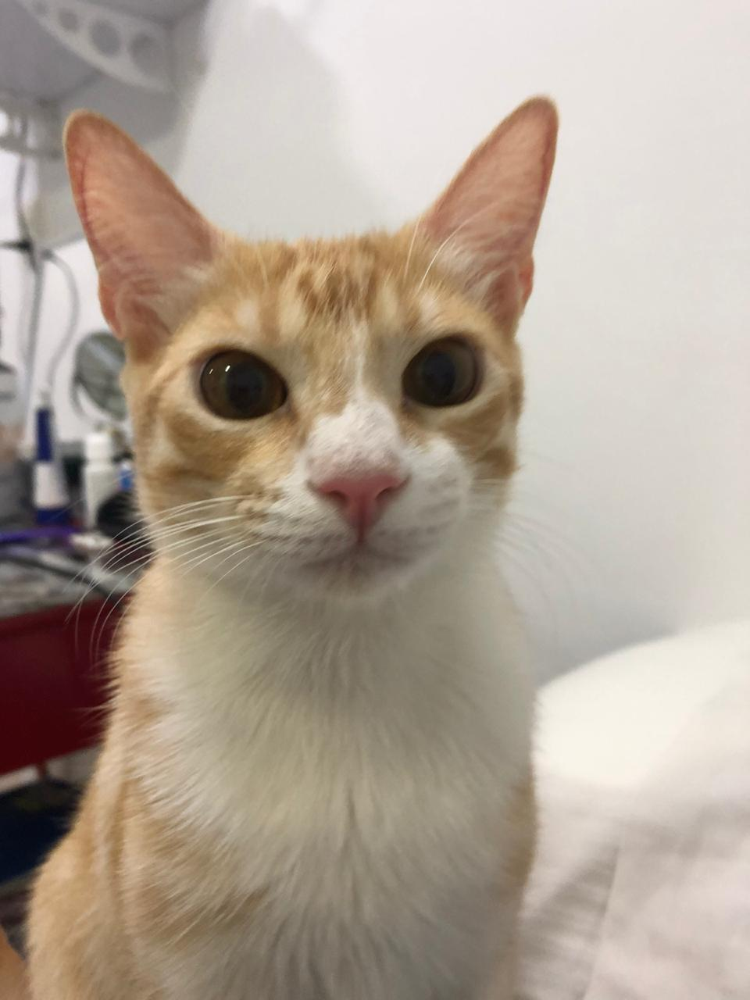
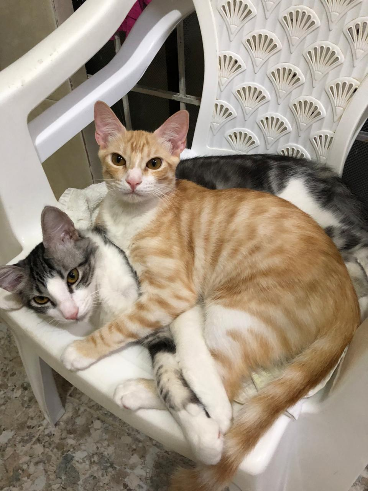
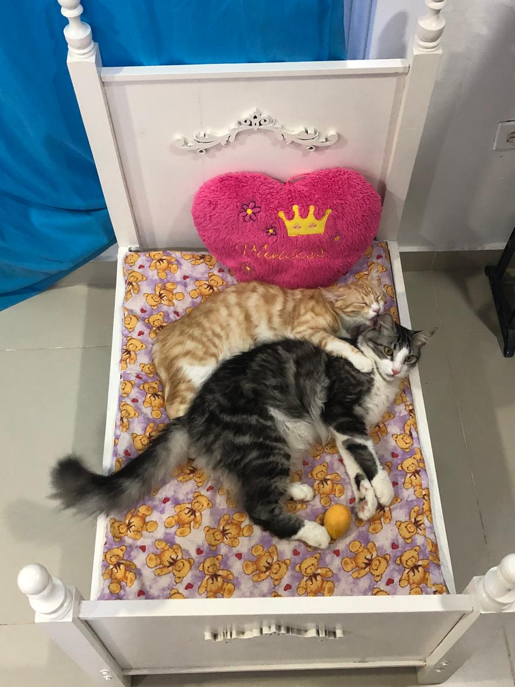

Sabemos que el perro es considerado el amigo del hombre y es preferido por muchas personas, pero también un animal tan viejo y amigo del hombre ha sido el gato que desde culturas milenarias como Egipto acompañaban al hombre y hasta lo veneraban
los gatos tienen muchas cualidades divertidas aunque muchas personas no lo crean los gatos pueden ser igual de amigables que los perros, también son cariñosos y curiosos, Sin embargo los gatos también son independientes y aprenden muy rápido.
Los gatos también pueden ser entrenados al igual que los perros, es cierto que algunos gatos no son muy sociables pero todos los gatos tienen personalidades diferentes al igual que los humanos (crean relaciones desinteresadas, van al baño ellos solos, son muy aseados, son persistentes y creativo, tienen emociones, sueñan, son excelentes cazadores, están alerta, curiosos)
| Mis gatos!! | |
|---|---|
| Tommy | Wendy |
|  |  |
| Los dos juntos | |
|   | |